我们要的就是在行业复苏的黎明再介入。这就是：水不惊鱼不跳。节省资金成本，提高资金使用效率。省略数年的担惊受怕与等待的数年、数月时光。在股价的右侧交易而不是左侧交易。这就是买在“心形”右侧下跌洗盘“心”右边那个“点”位置买入的精髓。也是主升浪大多数都是在相对高位展开的精髓所在。
市场参与者都渴望找到一套适合自己稳赚不赔的交易规则，就像赌场老千技术再好也干不过人家一手天牌，总是希望在每把赌局开赌之前就已经抓到一把好牌，这是人之常情慨莫如之。
我当然也不例外。为此下过无数的功夫。人家说只要你投入1万个小时，任何行业你都可以成为专家。我在这里可以非常肯定的说：在证券市场不行。纵然你练就绝顶的功夫，也只是事后诸葛亮的感叹的用处。就如同中国武术花拳绣腿，苦练一辈子也顶不住泰森无所畏惧的一拳。信不信由你！
我们先来完成第一步：找一套稳赚不赔的技术方法。第二步再另外写专贴用我的亲身经历讲述为什么你即使有了稳赚不赔的技术仍然做不到稳赚不赔。
例如下图如同“心形”，就是一种稳赚不赔的图形方法。假如你有100万资金（同比例缩小或者扩大）你每年做两次，每次赚50%，5年复利的威力理论上可以达到5767万元/100本金=5年57倍，理论上这个事可行的，但是你持股一只长达5年，用时间的玫瑰方法达到57倍目标，用概率的逻辑推演的话，这在理论上都是不可能成立的（你自己去推演，推演不出来还想在证券市场混话，劝你早退出，不要被谁谁持有什么股票例如腾讯、贵州茅台、董明珠持有1万元格力电器涨1800倍所误导，不信你自己稍微加几个前提条件后，你就发现他们那样的收益与1元钱中彩票1800万头彩一样不可复制，在逻辑上市绝对不会成立的）。在这里先说说：不要告诉我你看过很多书然后放肆的敢于与我探讨，你看过的我应该都看过，你没有看过的更多我早就看过。最重要的是，你即使看过也仅仅是看过，怎么可能有悟性把书读到极简？极薄？你是那块料的话，就不会来雪球看我的帖子了，因为你已经何止是数亿计的大佬?早忙着去找下一个机会了。
万元 本金 上半年 下半年
第一年 100 150 225
第二年 225 338 506
第三年 506 759 1,139
第四年 1,139 1,709 2,563
第五年 2,563 3,844 5,767
理论很美丽，现实很骨感。上述计算表在现实中怎么可能做得到？这个问题我们另外再开贴专门讨论，现在集中精力讲“心形”图形（还是要靠你们自己去悟，别人只是指引方向，路还得自己走才能达到目标）。
下图是今天现实版的“心形”图形，我们只能有待来日去印证它的高度。
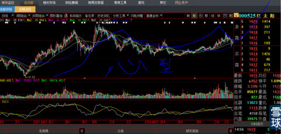
我怎么发现这种方法的呢？
记得是1999年9月，A股历史上最著名的“5.19”行情结束后，我复盘回顾历史，总想找到一种规律，翻到下图，突然如同被佛光照耀一般有一种顿悟。后来回想，是因为看过几万张图形后，突然看到这张高度概括的图形后，犹如窗户纸一下子被捅破，我之前看过的几万种图形里其实套进了无数这样的图示，只是分别穿着不同花色的马甲，使我迷失了判断真谛的眼光。就是下面这两张图。
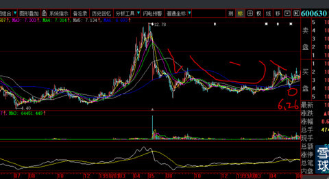
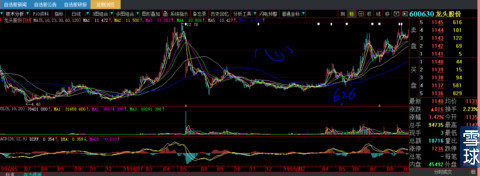
面对这张图，我就像发现股市宝藏秘密图一样，一直指导我到如今。随之又用两年时间，研究了大量数据，终于找出三套对付不同状况电脑技术指标与参数（何时是大资金建仓尾声？拉升的级别？洗盘的力度终结点在何处？时间运行多久？图形对应的未来大致高度是多少？怎样可以卖在相对最高点？撞大运压中爆庄股后短期最高极限的卖出客观指标是什么？参数是多少（规避人性弱点）？）。看看上图那两只脚，像不像一只碗的平面图的左右两只脚？所以我也经常把这种图形叫做“碗型、蝶形”，那个6.26元处就是最佳潜入点，我们再把6.26元左右两侧局部图形研究后会发现，又是一个“小型心形”，同时我们会发现，多么经典的一个“头肩底右肩突破”图形啊（不要问我很多问题，你又不是我儿子，我说这么多已经对得起粉丝了）。
我们再看看现实中的运用，尽量举最近的例子，让大家放弃类似：这种图形是十几年前的，现实中还有意义吗这样奇葩的疑问。
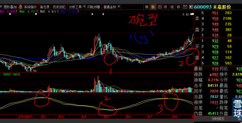
上图是600093禾嘉股份2014年8月26日图形，下面的技术指标中1、2、3我故意把它改造成反向的，当它死叉的时候，就是买入，反之卖出（是怕有人看我电脑偷取技术）。简单吧！你们去算算它最后的高度是不是与我教你们的高度算法很贴近？你们会发现，右脚越是下跌的少，涨幅就越高而不是反之。
下图是新华锦，这个是我的实战股，当时买入90万股并且敢于在股吧里贴出来。看看现在正好半年不到涨了一倍有余。下图的第一个圈处是我的买入点，第二个圈处是到雪球后让粉丝跟进点。
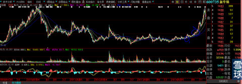
还有很多人当时就问出更奇葩的问题：你这样把庄股图和买单成交贴出来，庄家还会做吗？我都无语了。任何庄家入庄后，什么情况没有预计沙盘推演过？会因为你这个小毛贼买入就放弃？过一段时间再回顾一个我实际操作还没有完成的案列就可以更加客观的说明这个幼稚的问题。
下图是000603盛达矿业2004年7月24日截图，你们看像不像上个帖子《如何狙击庄股》中的“丫”型？左面的成交K线方式与那个帖子里的贴图是不是几乎一模一样？其实，这就是“心形”的变形而已，就是“心形”穿了一个马甲，它还以为我认不出来。你们看图，5、10、30均线全部上穿60日和120日长期均线，下面的成交量与前期相比瞎子也看得清清楚楚，7月22日跳空高开甩掉上日长阴线，连续横盘2日消化左侧套牢盘让短线客走掉。我在2014年8月15日看到000715跳高开盘后，仅仅扫了一眼想也没想，就在开盘后3分钟打到涨停（卖单太少尽快建仓），第二天也是横盘了一天。就把在涨停板上2个小时都封不住的000050按照涨停价27.7元卖出翻身再全部进入000715，当天晚上就出公告停牌重组，预计2015年1月7日开盘，这个故事只能是明年再讲了。
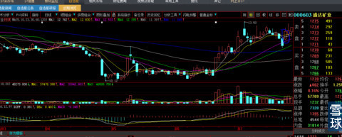
下图就是后几日暴涨行情。涨幅高度与我的技术方法基本一致。好了有人会问：为什么它只有这几日的连续拉升而没有像其他牛股那样，调整后再起连续暴涨行情呢？你要是能这样问，说明孺子可教。下图期初“丫”形左侧太小，时间又短，脚趾头也能猜出来主力筹码不多，属于短庄股行为的炒作方式。所以我就说呀：图形越大涨幅越高，反之就越少。应该可计的量度涨幅不就清楚了？把这个图形贴出来就是想表达图形的大小与涨幅量度的关系以及庄家介入深浅。让你们今后遇到同类问题不要再抱幻想。
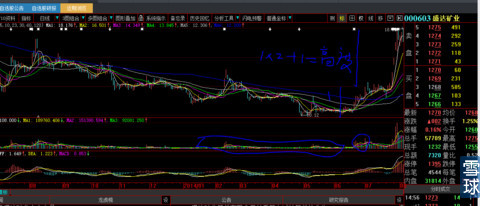
为什么早不进晚不进，单单要2014年7月才参与呢？下面这段话你要是记住了，保你今后战无不胜，虽然我知道没有人可以记得住。不要犟，我说的一定是你记不住的血泪经验，不信过两年你再回来看这篇文章：股价就像一河水不到趋势拐弯的地方不要玩，这样你看图的时候，一眼就可以翻过。你们看下图前几年那几段，长期下跌后，都有很好的宽幅波动，其幅度比我举例的这段时间还要大。我告诉你，在那根绿色年线没有由长期下降趋势改变为走平趋势前参与左侧长期下跌的波动交易，你参与一次无论赔赚，我就敢断言你活不了多久会粮尽弹绝。这是铁律。放着阳关大道的反转股不做偏去刀口舔血抢长期下跌股的反弹，死了也活该。
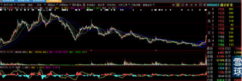
下面图形中股价连续两次上穿年线一定是长期趋势的改变，这也是“心形穿马甲”。例如603766隆鑫通用。再加上教你们的量度升幅阶段性算法，大概也会在头部跑掉。
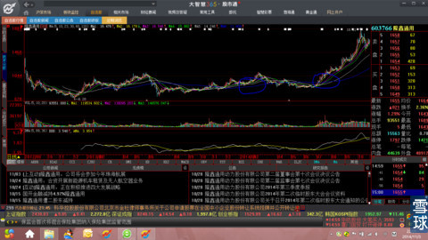
下图是招商证券图形，这种图形你如果不发誓永远记住它烂熟于胸就枉为股民。这张图透漏出股票操作全部手法、心法、成交量度控制、骗线以及成交量，堪称经典中的经典教科书，很难得有这么中外上下100年教科书中列举的经典图形。
看看右边的均线内弓型的角度与力度、股价冲到最左边14.56元形成完美大双顶假象，为什么就没有人质疑左边最高价14.56，是从7.74开涨，本次是从9.56开涨，大心型长达数年的过程中已经有过2次大的波动完全消化了左边大顶的套牢筹码（这句话很重要，是看盘分析精髓，里面看其他图形相似股票，正因为没有这样的多次宽幅冲击，图形简单，就走不出波澜壮阔的大行情），本次上涨无论量度、角度、市场环境今非昔比，股价即使冲过左侧高顶14.56元2元钱，就会打开股价图形一片新天地，量度升幅不可限量。再看回落成交量的快速萎缩恰到好处，我就在那个时候写出《券商板块的行情其实才刚刚开始》散户不要被前期券商的涨幅所吓倒，它们的行情其实才刚刚开始（见我2014年11月写的专贴，帖子直白而坚定）！写贴的动机与勇气就是从这里来的。
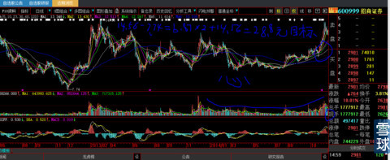
下图就是后来的结果，走到这一天，我就开始全面退出券商题材股（当时很多粉丝不理解），因为达到我的测算目标，股价理应进入宽幅震荡周期，并且对新来被套券商高位咨询菜鸟安心：你们很快会被解套并赢利不菲，请解套后不要再烦我（我恨那种底部不入高位抢筹的人，早干嘛去了？）。
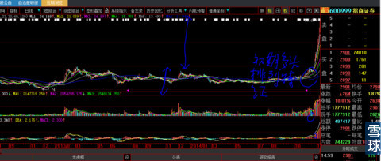
类似的例子举不胜举，为什么？这是股价上涨的必由之路，庄家没有任何办法可以回避股价上涨不穿越年线。例如今天我随手翻盘看到的000568泸州老窖下图。与上图股价连续2次上穿年线有什么区别呢？
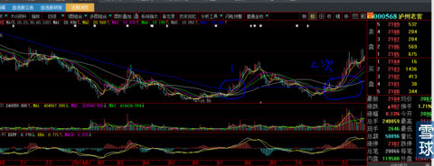
下图是泸州老窖长达10年图形，这一河水是不是彻底在改变趋势？还会为每天的那点涨涨跌跌所困扰吗？
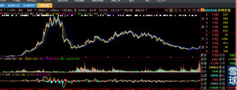
2015年1月2日回复@每天进步一点点98:
关于000525红太阳最后的一次回复：
1、红太阳从2012年12月4日的8.93元—2013年8月22日的19.55元是大波浪的第1波，可以视为未来大图型的第1浪，1浪的高度决定未来3浪的高度（3浪最少也是1浪的1.38倍）；19.55元——2014年3月11日13.03元是大2浪调整，时间与第1大浪运行的时间基本接近而匹配。你是在12月10日前后买入，已经比前期的买入者节约了16个月的时间，你知道16个月是多慢长吗？
2、前十大股东的前两个大股东是一家，合计持有3.07亿股占总股本的60.06%，真实流通盘就是2亿股。马上针对唯一大股东现金定向增发7275.32万股后，总股本正好扩张到5.8亿股，但是新增股本是至少36个月不可以卖出的，所以流通股本2亿股仍然不变；
3、预计到12月底的股东权益37.71亿元（9月底资金表数据）+预计4季度利润0.9亿元=38.61亿元/5.07亿总股本=每股净资产7.62元+(新增发价14.27元/股*7275.32亿股=10.38亿元+现有股东权益38.61亿元=2014年12月底股东权益总额48.99亿元）/ （原总股本5.07亿股+新增发0.7272亿股=5.8亿股）=每股净资产8.44元；2014年12月31日收盘价15.87元/净资产8.44元=市净率1.88倍，红太阳所属行业的市净率对应股价会假如再跌到15元股价，你还害怕吗？
4、2012年每股收益0.563元、2013年0.733元增长30%、2014年0.95元再增长30%，每年复合利润增长率30%以上，看看这些业绩，是要靠企业盈利赚出来的。无论是利润的绝对额还是增长速度，你去全股市找找，有几只这样的？
5、正因为利润增速如此惊人，才会有大股东大包大揽一家按照二级市场价现金定向增发，你去找找A股20年来除了坑害股民圈钱募集资金外，还有哪家这样做过？出了叶檀那样靠每天无用的废话赚钱的“经济人”不过脑子的对“红太阳”现金定向对大股东增发胡乱说话，对真金白银战场厮杀的你，她十年来的废话文章你去看看有个屁用？
6、你知道考核市盈率最核心的KPI是什么吗？除了我自己运用，就没有看到任何一家机构、私募、牛人能够这样运用和理解过，说出来你记住了：利润增长率再结合净资产收益率，才是应该给股票标的对象综合市盈率估值的标准。就是说，你股本10万元净资产收益率如果复合增长是30%的话，就应该给标的股票最低30倍市盈率的估值。比方你自己开公司，每年盈利能够复合增长达到上年净资产30%的话，3年就能回本，那么我买你公司价格最低也需要你公司年利润的30倍去计算=21.97万元净资产*30%利润率*30倍市盈率=197.73万元买你第三年21.97万元净资产的公司，不然你也不会答应。那如果你公司的净资产收益率是100%呢？也就是每年盈利总额等于一年本金，那还用说，100被市盈率绝对是发行价，不炒到500市盈率还好意思跟人家说？
7、如果我每写一篇帖子例如《红太阳典型的心形》，都要这样去给粉丝回复的话，我只能闭嘴。将心比心，我哪里会还有任何个人时间与空间。我都单独回复你不下5次了，还是不依不饶的追问。我实在是耽误不起时间。
 |
心型股票，稳赚不赔（000525红太阳）炒的是心 2014-12-27 10:58:10 |
Copyright © 1996-2014 SINA Corporation All Rights Reserved.